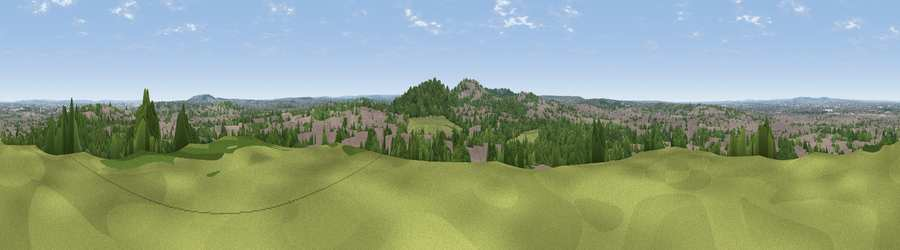

Viewpoint near Catford
#39575 in England · top 39% of its area beats it · near Catford · access?Where it is
The exact computed spot (TQ 35325 75325). Click the marker for map links.
Public access: no public right of way or access land is recorded at this exact spot — it may be on private land. Computed from Natural England's CRoW access layer and OpenStreetMap rights of way — not the legal definitive map. Always verify locally.
The view, rendered

A 360° render of this exact spot computed from the terrain model, tree cover and land cover — summer colours, afternoon light, calibrated against photographs of famous viewpoints. Real trees, hedges and buildings will differ in detail.
The panorama
Grey silhouette: terrain skyline in each direction (720 bearings, Earth curvature and refraction included). Dashed green: skyline with trees (+15 m) and buildings (+8 m) as obstacles. Blue strip: how far the ground is visible on each bearing.
Where the view opens
Wedge length = distance to the farthest visible ground on that bearing (vegetation-aware). Rings at 10, 25 and 50 km.
What fills the view
45% woodland · 42% built-up · 12% grassland
Angular shares of the visible panorama (visual magnitude), not map area. Landscape diversity 0.43 (0–1 Shannon).
Key numbers
More beautiful places nearby
The staircase of upgrades: each row has a higher view potential than everything closer. Driving times are estimates from straight-line distance, calibrated against real road routing — check an actual route before setting out.
| Place | Direction | Drive | Score |
|---|---|---|---|
| Viewpoint near Catford | S · 1 km | ~3 min | 33.8 |
| Viewpoint near Eltham | E · 8 km | ~16 min | 34.0 |
| Viewpoint near Croydon | S · 11 km | ~21 min | 34.6 |
| Viewpoint near East Finchley | NNW · 14 km | ~25 min | 38.5 |
| Viewpoint near Erith | ENE · 17 km | ~30 min | 38.9 |
| Viewpoint near Woldingham | S · 18 km | ~31 min | 40.1 |
| Viewpoint near Tatsfield | SSE · 20 km | ~34 min | 53.1 |
| Viewpoint near Limpsfield | S · 21 km | ~35 min | 55.9 |
51.46073, -0.05347 · source: screening · position refined by local search. Computed location — check access rights before visiting.